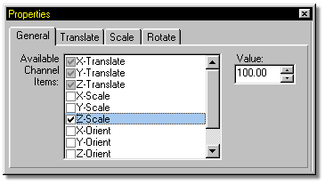
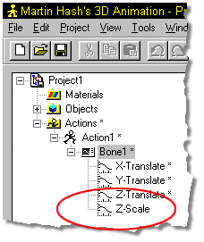

To add a new channel item to the list, activate it (make it visible) by
selecting it on the Properties Panel.
To add a new channel item to the list, activate it (make it visible) by
selecting it on the Properties Panel.

After it appears in the Project Workspace, simply drag the item into the channels window and drop it on the grid.

Tell Me About:
Channel Attributes
Removing Channels
Channel Add Control Points
Channel Frame
Channel Value
Channel Gamma
Channel Magnitude
Channel Rulers
Channel Bound Group
Other Group Commands
Channel Interpolation Methods